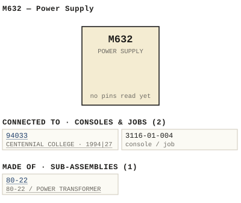

M632 — Power Supply
| Type | module |
| Category | POWER |
| Try it | simulator & front panel · download package (zip) |
| Earliest dated evidence | 1983|16 — title block date |
| Evidence | "17/6/83" on 1983 - 632-06-002 - POWER SUPPLY COMPONENT LAYOUT - DRN P. Mahoney - ENG MRW - ISS 2.jpg |
| Confidence | high |
| All years found | 1983|16, 1994|27, 1995|28, 2005|38 |
| Used in jobs | 94033 (1994|27), 3116-01-004 |
| Folder | Consoles/1990-1999/94033 - CENTENNIAL COLLEGE |
| Folder | DOCUMENTS/RECENT SCANS/WBSps.ca 20210317 - Large pile of D |
| Folder | DOCUMENTS/RECENT SCANS/WBSps.ca 20210321 - scans |
Connections
What it is made of and what it is part of.
Pictures


M632.connections.svg 1983 - 632-06-002 - POWER SUPPLY COMPONENT LAYOUT - DRN P. Mahoney - ENG MRW - ISS 2.jpg
1983 - 632-06-002 - POWER SUPPLY COMPONENT LAYOUT - DRN P. Mahoney - ENG MRW - ISS 2.jpg 1994 - 94033 - DOC - 94033-01-001 - FUNCIIONAL DIAGRAM IXPICAL NNTERCQM CONTROL SCHEMAIC SSUEI REMSION.jpg
1994 - 94033 - DOC - 94033-01-001 - FUNCIIONAL DIAGRAM IXPICAL NNTERCQM CONTROL SCHEMAIC SSUEI REMSION.jpg 19xx - DOC - 712-02-104 - TEST FIXTURE SCHEMATIC NOTE BINDING PEST TERMINALS USED.jpg
19xx - DOC - 712-02-104 - TEST FIXTURE SCHEMATIC NOTE BINDING PEST TERMINALS USED.jpg 19xx - 632-06-002.jpg
19xx - 632-06-002.jpg 19xx - M632 - 632-02-001 - OVIDJ POWER SUPFLY.jpg
19xx - M632 - 632-02-001 - OVIDJ POWER SUPFLY.jpg 19xx - M632 - 632-06-001 - REGULATOR BOARD.jpg
19xx - M632 - 632-06-001 - REGULATOR BOARD.jpg 19xx - M632 - 632-06-002 - WARO-BECK SYSTEMT.jpg
19xx - M632 - 632-06-002 - WARO-BECK SYSTEMT.jpg 19xx - M632 - P001 - Title Page.jpg
19xx - M632 - P001 - Title Page.jpg 19xx - M632 - P002 - 1-1.jpg
19xx - M632 - P002 - 1-1.jpg 19xx - M632 - P003 - 2-1.jpg
19xx - M632 - P003 - 2-1.jpg 19xx - M632 - P004 - 3-1.jpg
19xx - M632 - P004 - 3-1.jpg 19xx - M632 - P005 - 3-2.jpg
19xx - M632 - P005 - 3-2.jpg 1994 - 94033-01-001 - CENTENTIAL COLLEGE RADIO INTERCOM - DRN DRG - ISS 1.jpg
1994 - 94033-01-001 - CENTENTIAL COLLEGE RADIO INTERCOM - DRN DRG - ISS 1.jpg 1977 - 3116-01-004 - 3116-01-004 - INPUT SENSITIVITIES DYNAMIC MIC CARBON MIC AND LINE.jpg
1977 - 3116-01-004 - 3116-01-004 - INPUT SENSITIVITIES DYNAMIC MIC CARBON MIC AND LINE.jpg 19xx - 712-02-104 - M712A T TEST FIXTURE SCHEMATIC - DRN HM - ENG HM - ISS 1.jpg
19xx - 712-02-104 - M712A T TEST FIXTURE SCHEMATIC - DRN HM - ENG HM - ISS 1.jpgPrice history
| Year | Kind | Price | Listed as | Effective | Source |
|---|---|---|---|---|---|
| 2005|38 | used market value | 100.00 | M632 Power Supply | wbsps - website ARCHIVE/WBSPS 2008/ARCHIVE/old website/PriceGuide.htm | |
| 2006|39 | used market value | 100.00 | M632 Power Supply | wbsps - website ARCHIVE/WBSPS 2008/ARCHIVE/jan 2006 shell/priceguide.htm |
Pinout & connections
Physical manual inventory
| Item | Location | Status | Scanned |
|---|---|---|---|
| Powersupply | LOOSE BOX | DUPLICATE | |
| M632 - Power Supply | PDF - Already scanned | ||
| M632/632A Power Supply | LOOSE BOX | ||
| Powersupply | LOOSE BOX |
Documents (2)
| Year | File | |
|---|---|---|
| ? | 19xx - M632 - Power Supply (2).pdf | note |
| ? | 19xx - M632 - Power Supply.pdf | note |
Photos & scans (15)


Sub-assemblies & parts used (1)
| Item | What | Family | Year | How we know |
|---|---|---|---|---|
| 80-22 | 80-22 / POWER TRANSFORMER | Power transformers (80-n) | 1979|12 | named in its manual |
Consoles & jobs it is connected to (2)
Their own drawings name this module.
| Job | Year | Drawing | Page |
|---|---|---|---|
| 94033 | 1994|27 | 1994 - 94033-01-001 - CENTENTIAL COLLEGE RADIO INTERCOM - DRN DRG - ISS 1.jpg | 1 |
| 3116-01-004 | 1977 - 3116-01-004 - 3116-01-004 - INPUT SENSITIVITIES DYNAMIC MIC CARBON MIC AND LINE.jpg | 1 |
Named in other drawings & documents (4)
From the manuals
Each manual split into its sections. Text that is the same in many Ward-Beck manuals (warranty, address, standard notes) is kept once on the Boilerplate page and linked.
Specifications (2)
Technical Data — 1015 words · 19xx - M632 - Power Supply (2).pdf, page 2
Regulated Output
Outpu t Voltoge ' +25 volts de at loed currents from 0 to 3 o mpe res .
Line Regulatld'n , 0 .25~ for lin e vari ation s f rom 105 to 125 volt s
Lo od Regul ation , 0. 1~ for load vorlotlon s from zero to full loed .
Ripple o n d Noi s e: Le u th on SOO micro volt s RMS for oil lood condition s sp eci fied a b o ve .
I n te r na l Imped once, Le s s than 0 .05 ohm from dc to 20 kH z .
St obility , 0 . 1 volt me a sured ov er an 8 hour p eriod, after 30 minut e s warmup .
Prot ection, Ov ercurrent a n d s ho r t circuit fo l d b o ck . Ov er- volt age crowbar .
Unregul at ed Ou tput
OUtput Volt ag e, +3 2 volt s de +/- 10'1 nominal a t loe d curren ts from 0 to 2 amp ere s, a t 1 15 volt s a c input .
Rippl e : Le s s th an 1 volt RMS a t 2A lo ad .
AC Input: 105 to 125 vol ts a c , 60 Hz, 100 VA maximum .
Ambient Temp ero lure , 0 to 40 d eg r ee s Cel siu s . a .c
Dimen sions' 5 .1" wId e " 3 .4 " high" 13 .7" de ep ps
(130 mm x 86 mm .. 348 mm) . BS
W!ig ht: 8 .8 lb . (4 kg). W :// tp ht
CIRCUIT DESCRIP TION
Tne M632 powe.. . ...ppl y I.....eel p .. I...... l l y i n In l e rcom sy.,..... "'llli >:lng l he M70JB and 1147 128 In lercom mod... le • •
T ne p r i ma r y wind i ng of Ine powe r I..ansforme.. T 10l I. de.l gned for op e ..a llon from a 115 v eu a c, 60 H>: l ine.
Br ld ge r ecl i' i e .. CRIOI and fi lte .. capacllor C IOI follow In e 'e<;:on d a .. y t ..an sfo..me .. winding . T n e unreg ulated c c OUlpul I. b ,.ought ou t a l P :Z, pin . 5 &< 6 afte,. pa ning t n ro u g n fu.e Fl 0:Z.
A .econd p ain or lginallng aline ree ll fl e ,. OUlput Is fed vi a fu se FIOJ , p an t,. an. I. lor CIOI a nd re. l.to r R I OI 10 t he .. eg ulaled OUlp ...1 al P:Z. p i n . 7 &< 8.
Tne LEO " power on" i n dlea lor 05101 I. <;Qnn e<;:le d aeros . In e regu laled r- ou tpu l vo lta ge .
Tne p .. lmary v o l l a g e ..eg ul alor e lre...11 a s wa ll a. Ine ov erv o lt a g e crowbar protec t ion Circu it a ..e conlalned on t n e 9_1 CJ.4 ..egul ato.. ee ..d .
UI I. t h e ba.lc In leg .. ated c l n:: u l t regu la tor wnlcn contains t n e r equ l ..ed ..er e ..enclng vollage and amp Ilfe,.• . Tne l rvte.. nal refe~nce v o l ta ge i ,. compa~d wltn a por l lo n of t h e 25 volt ..egulated OUl pu t vi a vo l t a g e d i v ider R8, R9 and R IO. A ~.u l tanl erl"Ol' v o l l age app ea,.. at p in 2 o f U1 d r i v ing l he cu r~ 1 boo. te .. t ..a n.Islor 01 . The co llec lor OUlput o f Cl dri ve. the ma in e"lerna l se.. ie. p a n t ..a n ,. l ,.t or 0 10 1 . If ..emo te ......In g of t he 2S volt loa d v o ll a g e i . req...l red ClJt jUft'li:le.. Jl a nd e eeeeer P:Z p i n 1 w l t n a sepa ..ate ...... ,.e wl ..e to t ne lo ad dl " e<;:tl y .
Ul c ont a in s In te .. nal currenl limit i ng and fol d b a c k c lrc u l l S. Tn e volta ge drop developed acro, ,. Rial Is fed to UI pin 1, vi a vol lage divide .. R4/R 5. Wn en tne s u p p l y c u r-r en t reacn es IIppro"lma tely 3 . 7 ampe ..e s, foldback eu .... ent l i m it ing se ll In . With th e .upp ly ou tput st'lo.- te d , tn e c u .... en l I,. l i mi te d 10 0.5 a mpe " es ma"lm...m . a
Ov e rv o l tage p rotec t i on i. provi d e d b y ' erowb a .. ' SCR 0 2 . Tn e s ens i n g .c
network c on s i s t s o f CRJ. C6 , R ll and R 12. StIould l he outpu t v o l l a 'jle ps
r i s e to app ro x l.... l e l y 27 volts due to brea k down o f a n y o f 1M BS
regu l Uor compon en lS , 0 2 w ill fi,.. a nd th...s s.tlor- t -cin:: u lt the p o we .. supply ..esu lt ln g In In e blo wing of f u se FIOJ. W ://
- source: 19xx - M632 - Power Supply (2).pdf, p. 2
Technical Data — 136 words · 19xx - M632 - P002 - 1-1.jpg, page 1
M632 _POWERSUPPLY Regulated Qutput Output Voltage: +25 volts dc at load amperes currents from Line Regulation: 25% for Iine variations from 105 ac 125 volts Load Regulation: 0.1% for load variations from zero full load. Ripple and Noise: Less than 500 microvolts RMS for all Iine and load conditions specified above Internal Impedance: Less than 0.05 ohm from kHz .
Stability: volt measured over an minutes warmup. hour period, after Protection: Overcurrent and short circuit foldback. Over- voltage crowbar. Unregylated Qutput Output Voltage: +32 volts dc +/- 10% nominal Ioad currents from amperes, 115 volts ac input. Ripple: Less than volt RMS load. AC Input: 105 125 volts ac, 60 Hz, 100 VA maximum. Ambient Temperature: degrees Celsius. Dimensions: wide 3.4" high 13.7" deep (130 mm Mm 348 mm) Weight: 8 .
8 Ib. kg) 1-1
- source: 19xx - M632 - P002 - 1-1.jpg, p. 1
Drawings (10)
Each scan with its trace laid over it: the slider runs from the scan to the vector drawing. Click one to see it large and save it as SVG, DXF, KiCad, PDF or PowerPoint.
Funciional Diagram Ixpical Nntercqm Control Schemaic Ssuei Remsionviewer
Test Fixture Schematic Note Binding Pest Terminals Usedviewer
POWER SUPPLY / COMPONENT LAYOUTviewer
Connector Frame Wiring Viewed From Rearviewer
Regulator Board Component Layoutviewer
Waro-Beck Systemtviewer
19xx - 632-06-002viewer
Read from the drawing title blocks.
| Drawing | Title | Date | Drawn by | Checked by | Iss. | Source |
|---|---|---|---|---|---|---|
| B 632-06-002 | POWER SUPPLY / COMPONENT LAYOUT | 1983|16 | P MAHONEY | 2 | file | |
| 632-02-001 | Ovidj Power Supfly | U | file | |||
| 632-02-001 | From Schem Atic | file p.6 | ||||
| 632-06-001 | Regulator Board | KWL | 2 | file | ||
| 632-06-002 | Waro-Beck Systemt | U | file | |||
| 632-06-002 | Component Layout Scall Issui | file p.7 | ||||
| 632-06-002 | Power Surtly Component Layout | U | file p.7 | |||
| 712-02-104 | Test Fixture Schematic Note Binding Pest Terminals Used | file | ||||
| 94033-01-001 | Funciional Diagram Ixpical Nntercqm Control Schemaic Ssuei Remsion | DRG | file | |||
| B 632-06-002 | file |